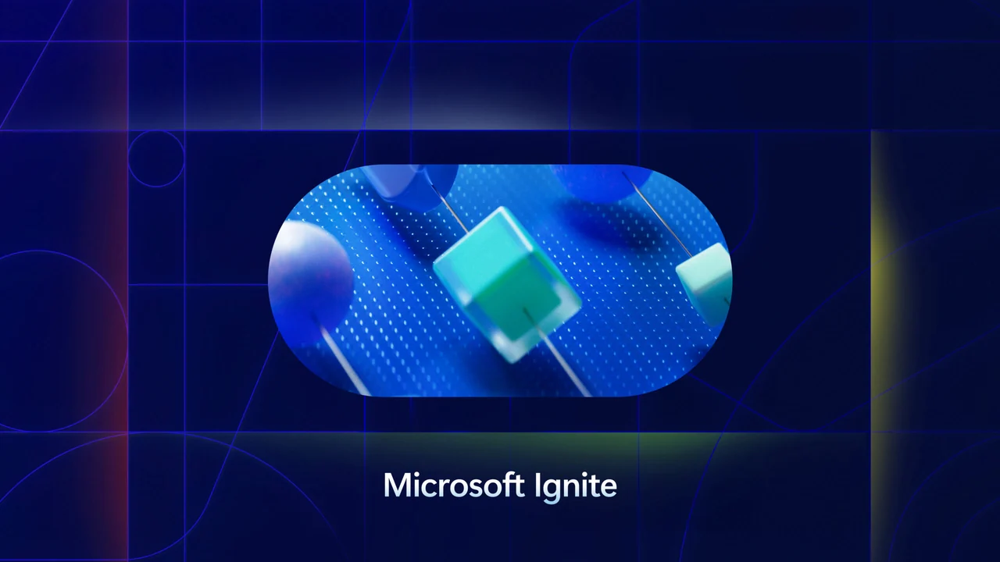
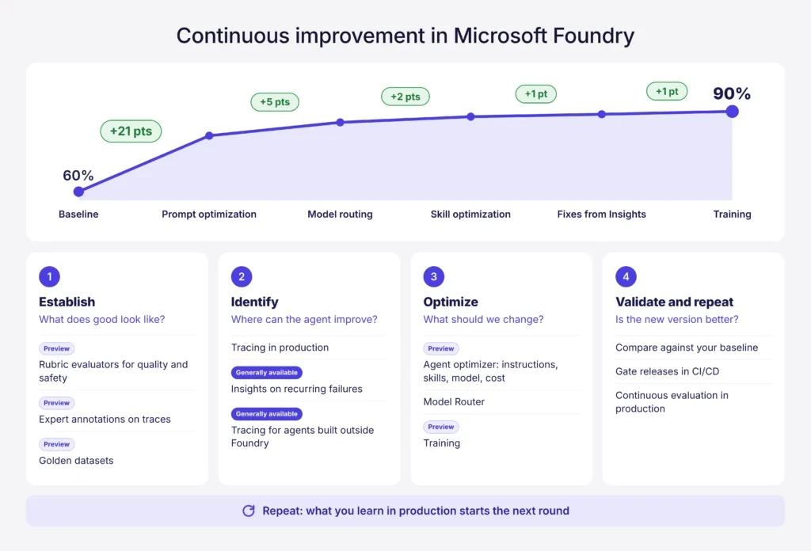
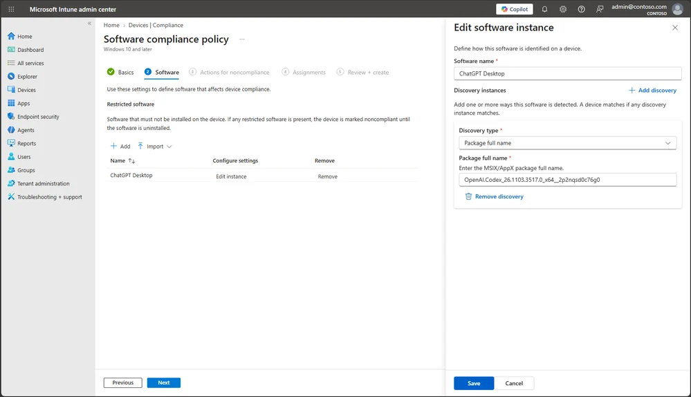
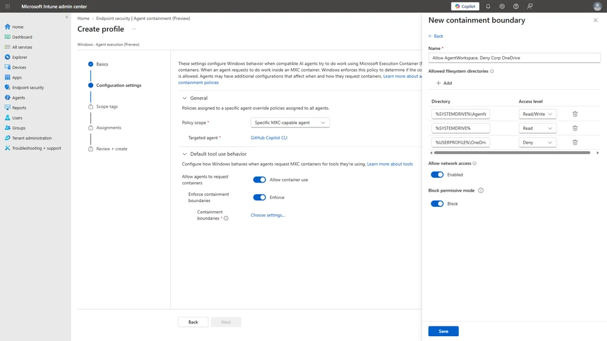
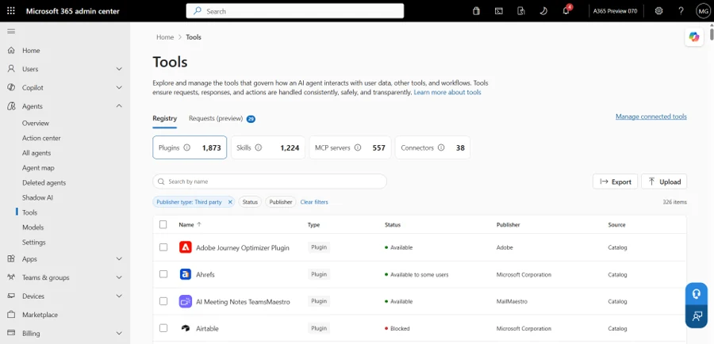
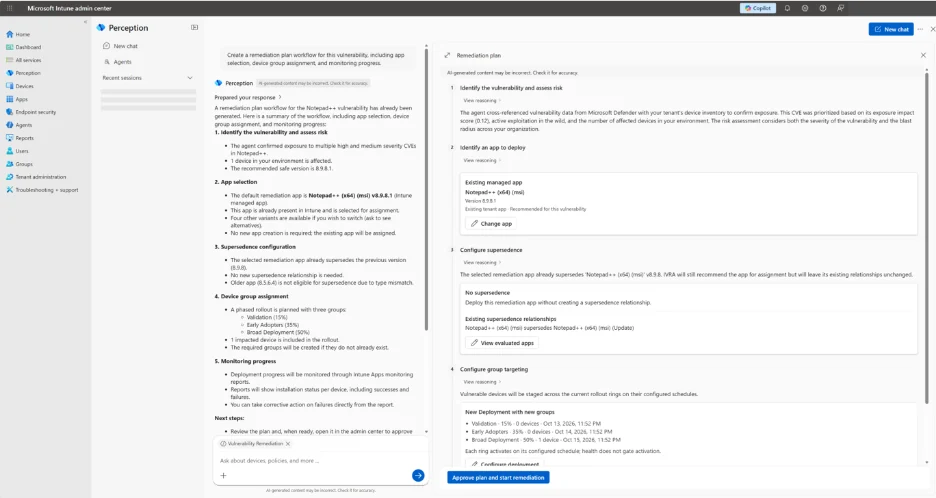
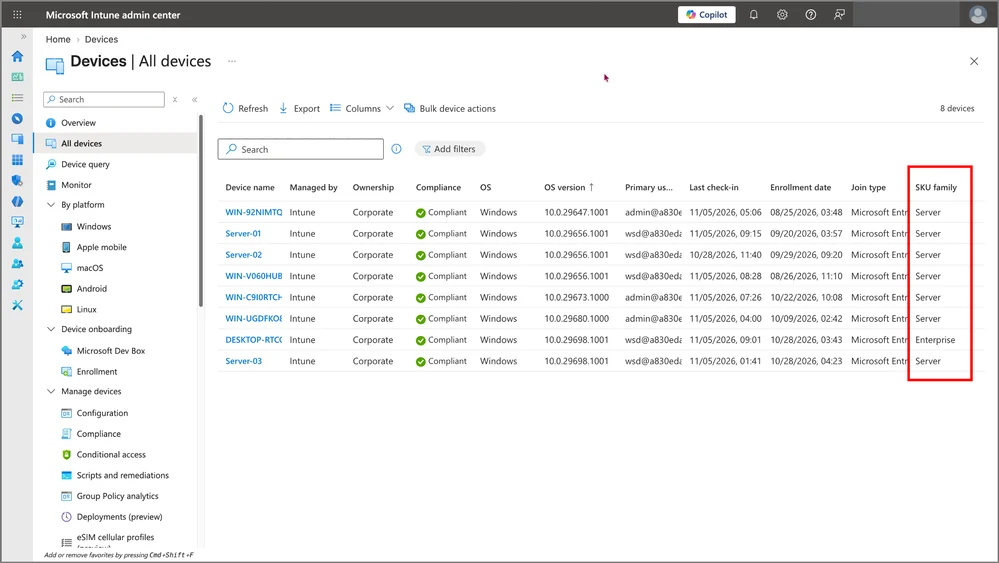
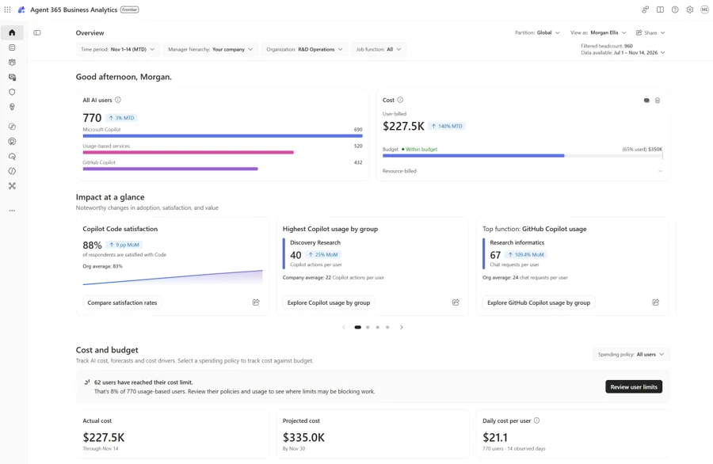

Microsoft Ignite 2026: AI, Intune and Agent Governance
I spent much of my Build 2026 recap on what agents need to work: context, models, identities and somewhere safe to run. At Ignite, those pieces start to look like work for an endpoint team. An Intune policy can mark a device noncompliant when it finds a restricted app. Windows can limit what a supported agent can do inside a container. Entra can retire an agent identity that has outlived its job.
Those are the announcements Iâd put next to Copilot Autopilot and the new models. If an agent can carry on after you close the chat, someone has to be able to see what it did and stop it when the job is over.
Microsoft Ignite runs November 17â20. The availability below reflects the opening announcements as of November 18. Microsoft Ignite 2026 Book of News.


Copilot Home, Cowork and Autopilot
Copilot Home brings Chat and Cowork together. Home, Office in Copilot and Copilot Managed Runtime are generally available. Copilot Code is expected to reach GA in the coming weeks. Autopilot is rolling out through Frontier, where Copilot Workspaces is also available. Each Autopilot has a Microsoft Entra Agent ID and an assigned manager. Its sign-ins and actions are logged under its own identity. Microsoft Copilot Blog.
Iâd start with a recurring task that falls between meetings and email. Let an agent check whether an open item has moved, pull in the relevant documents and prepare a follow-up. Give it permission to draft first. Sending a commitment on your teamâs behalf is a different decision.
Microsoft announced MAI Code 2, Code 2 Flash and Cyber 2 Flash, alongside new image and audio models. Microsoftâs model announcement describes Code 2 Flash in Foundry as a Limited Access Preview. Microsoft-Decision-1.1 is GA and can handle tasks such as classification and routing. I would compare models on the cost of a successfully completed task, including retries and manual cleanup. That is the figure that matters when the same workflow runs every day. Microsoft AI, Microsoftâs keynote roundup.
Microsoft IQ and continuous improvement in Foundry
Microsoft IQ brings together Work IQ, Fabric IQ, Foundry IQ and Web IQ, with more than 350 third-party connectors. The new Business Plugins package knowledge, skills and tools for reuse across agents and are available through Frontier. Work IQ Retrieve, real-time meeting context and granular MCP policies are GA. Memory remains in Public Preview. Microsoft IQ, Azure Ignite roundup.
If five agents need the same internal policy, Iâd rather have one team maintain the source and set its access rules. Once you copy the policy into five prompts, every policy update becomes five separate jobs. The value of the plugin depends on whether somebody actually owns the source it points to.
Foundry adds more ways to use production traces and evaluations to improve an agent. Insights is GA. Trace annotations, golden datasets, and new skill and cost optimization capabilities are in preview. Agent Optimizer evaluates proposed changes against your own criteria, and your team chooses what to deploy. Thatâs a natural next step after getting agent tracing and evaluation working in Foundry. Microsoft Foundry.


Intune controls for local AI agents
Software Compliance is in Public Preview. If Intune finds a restricted application on a Windows device, it can mark the device noncompliant. Conditional Access can then block that device from protected company resources. It evaluates supported application identifiers, such as MSI product codes or Store package names. Editor extensions, npm packages and standalone executables canât be selected in this preview. Intune Customer Success.

That can interrupt access even while the local agent is idle. Before assigning a policy broadly, Iâd try it with a pilot group and check how quickly an employee can restore access after removing the app. The remediation message is part of that test.
Agent Containment in Intune sets boundaries for supported agents using Microsoft Execution Containers (MXC). Windows enforces the file and network limits on supported execution. A coding agent might need write access to one repository and no access to a directory containing credentials. Thatâs a boundary Iâd want Windows to enforce. Support depends on the agent and execution method. Windows Developer Blog.

MXC has been GA on Windows 11 since October. The new Intune controls and process container improvements are in preview. Learning and Permissive Modes are GA, and Local Micro VMs are experimental. Windows Experience Blog, Agent 365 Blog.
Agent 365 and Entra Agent ID
Agent 365 is extending management to more platforms and to supported local and previously unsanctioned agents. Dynamic Agent Risk (Preview) combines runtime signals with what an agent can reach and what it could affect. The Tool Registry brings plugins, skills, MCP servers and connectors together. Microsoft expects the Action Center for inactive and ownerless agents to enter private preview in December. Agent 365 Blog, Book of News.

Iâd review the tools when approving the agent, and again when a connector changes. Adding a tool that can update a record changes the agentâs reach, even if its original instructions stay the same. I covered where the management responsibilities sit in Agent 365 vs. Microsoft 365 Agents.
Entraâs automated lifecycle policies for agent identities are GA. They can check sponsorship and recent activity, then act according to the policy. In Preview, separate Conditional Access policies for supported assistive agents can restrict the risky agent while the employee keeps working. The MCP Firewall is also in Preview. Iâd include agent ownership in offboarding. If a person leaves, which of their agents should keep running, and who is taking them over? Microsoft Entra Blog.
Microsoft Perception is generally available as a security platform. The Vulnerability Remediation Agent in Intune remains in limited Public Preview for eligible customers onboarded to Perception. It combines vulnerability findings from Defender with Intuneâs device and app context. Admins can validate targets and exclusions, approve the plan and roll the fix out in rings. Roles and scope tags still apply. Microsoft Security Blog, Intune Customer Success.

This is one I would pilot. Between a Defender finding and an update on the right devices, someoneâs usually matching affected versions to packages and working out where to deploy first. If the agent gives the endpoint team a plan they can verify, Iâd measure how long it takes to reduce the exposure and how many targeted devices still need the fix after rollout.
Windows Server in Intune and the endpoint updates worth tracking
Windows Server management in Intune is available through the Windows Server Insider program for eligible scenarios, including branch and edge servers. The preview covers selected configuration and compliance policies, Win32 app deployments and updates with Windows Autopatch. Microsoft describes testing supported Insider builds in a separate environment. Intune Customer Success.

Before enrolling a test server, Iâd check what is already assigned to All devices, which scope tags apply and which team owns each setting. Azure Arc still covers infrastructure management and hybrid use cases. Agree on which tool owns each workload when both teams manage the same server.
Enterprise App Management is expanding automatic updates to more eligible, verified apps, including apps the IT team didnât originally deploy. That and App-in-use Detection are in Private Preview. Device-level app inventory is in Public Preview. Microsoft announced CIS benchmark auditing for Public Preview in November. In Limited Public Preview, Company Portal can show app installation and compliance progress after Windows Autopilot device preparation. Microsoft Intune Blog.
The app update announcement is easy to miss. If your team spends time chasing outdated software that it never deployed, that is a good candidate for a small test once you have access.
Agent 365 Business Analytics and AI spending
Agent 365 Business Analytics is rolling out in Frontier. Microsoftâs detailed launch post specifies at least 50 Microsoft 365 Copilot licenses at launch for analytics on Microsoft services, with access expanding to tenants with one or more licenses by mid-December. Connected non-Microsoft services require Agent 365 and/or ME7. Assisted Hours estimates the share of work AI helped complete. Compare it with the time and cost your process actually incurred. Agent 365 Business Analytics.

Iâd keep the first pilotâs measures simple. How many jobs finished successfully? How much review did they need? What did each completed job cost? A busy agent can look healthy on a usage chart while creating work for somebody downstream.
Microsoft Ignite 2026 availability at a glance
GA means generally available. Preview access can depend on enrollment, licensing and supported scenarios. Status as of November 18, 2026.
| Announcement | Availability |
|---|---|
| Copilot Home, Office in Copilot and Managed Runtime | GA |
| Copilot Code | GA expected in the coming weeks |
| Copilot Autopilot and Workspaces | Frontier |
| Microsoft-Decision-1.1 and Foundry Insights | GA |
| Microsoft Execution Containers on Windows 11 | GA since October, with new process container features in Preview |
| Intune Software Compliance | Public Preview |
| Intune Agent Containment and Dynamic Agent Risk | Preview |
| Entra automated lifecycle for agent identities | GA |
| Microsoft Perception | GA |
| Vulnerability Remediation Agent in Intune | Limited Public Preview, onboarding required |
| Windows Server in Intune | Windows Server Insider Preview for eligible scenarios |
| Expanded automatic app updates in Enterprise App Management | Private Preview |
| Agent 365 Business Analytics | Frontier Preview |
Where Iâd start after Ignite
Pick one small agent workflow. Write down who owns it, which data and tools it can use, where it runs and which steps need approval. Run a good case and a case that should be denied. Then revoke access and check whether the agent can still run. Thatâs the part Iâd want demonstrated before widening the pilot.
If the device team already has a long list of unpatched apps, run an endpoint pilot alongside it. Iâd take a verifiable improvement in patch coverage while the agent team works out its controls.
For the full set of announcements and session coverage, see the Microsoft Ignite 2026 Book of News.